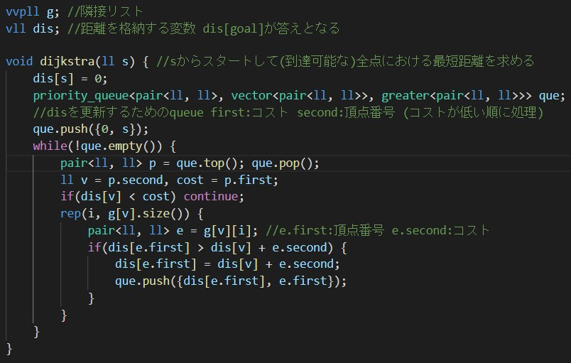
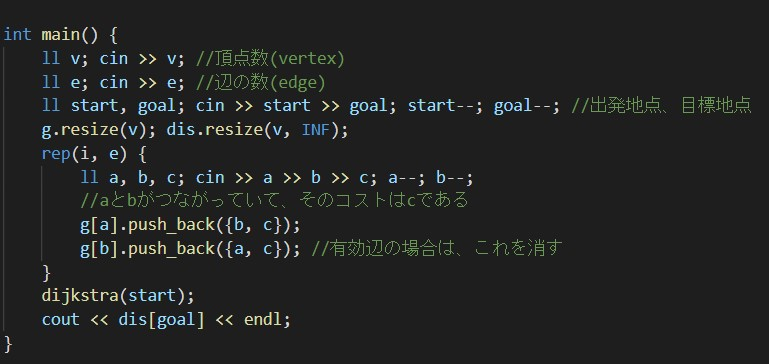

概要
- グラフ上における最短経路を求める。
- priority_queueを使い、「距離が近い」ところから最短距離を確定させていく(後述)
- 計算量はO(|E|log|V|)
- ベルマンフォード法に比べて計算量が少ないが、負の辺を扱えない
- ワーシャルフロイド法に計算量が少ないが、実装が比較的重い
使う道具
- 隣接リスト vector<vector<pair<ll, ll>>> g
- 距離を格納する配列 vector<ll> dis
- チェックする頂点を格納する優先度付きキュー priority_queue<pair<ll, ll>, vector<pair<ll, ll>>, greater<pair<ll, ll>>> que
({辺, コスト}のように使う)
(コストの小さい順にソートしたいので、{コスト, 頂点}のように使う)
手順
dis[初期地点]のみを0、それ以外をINFにする。
まず初期地点をqueに入れて、gをもとに初期地点の周りの頂点のdisを更新していく。
それと同時に初期地点の周りの頂点もqueに入れていき、同じようにdisを更新していく。
実装例
